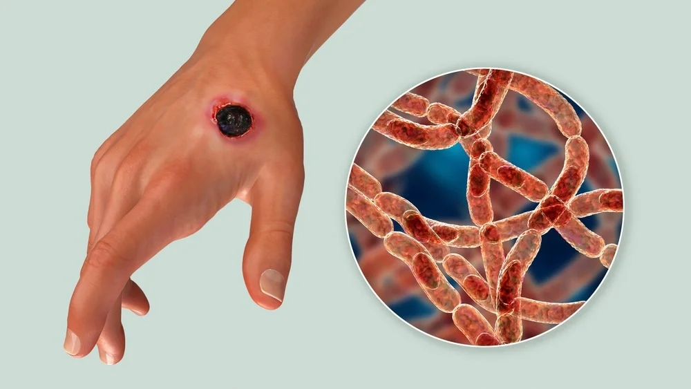

Expanded Nursing Uganda Explanation
Anthrax should be understood beyond a short definition. Link the concept to patient history, focused assessment, common risks, nursing priorities, documentation and evaluation of outcomes.
01 Anthrax
Anthrax is a serious infectious disease caused by the bacterium Bacillus anthracis .
It’s a zoonotic disease, meaning it can be transmitted from animals to humans . While rare in humans, anthrax remains a significant public health concern due to its potential for use as a bioweapon.
02 Etiology
Bacillus anthracis is a Gram-positive, rod-shaped bacterium that forms highly resistant spores.
These spores can survive in soil and on animal products for extended periods, even decades. When conditions become favorable (e.g., entry into a living host), the spores germinate into vegetative bacteria, which then produce toxins responsible for the disease’s pathogenesis. The toxins include edema toxin, lethal toxin, and protective antigen. These toxins disrupt cellular processes, leading to the characteristic symptoms of anthrax.
03 Forms of Transmission and Routes of Transmission:
Anthrax primarily occurs in three forms, each with its characteristic route of transmission: These are also the types of Anthrax
- Cutaneous Anthrax: This is the most common form in humans. It occurs when spores enter the body through a break in the skin, often through contact with infected animals or contaminated animal products (e.g., hides, wool, hair). The spores germinate in the skin, leading to the development of a characteristic lesion.
- Inhalation Anthrax: This is the most dangerous form. It occurs when spores are inhaled into the lungs. Inhalation anthrax typically starts with flu-like symptoms, but rapidly progresses to severe respiratory distress and potentially fatal sepsis. This route is less common than cutaneous anthrax but carries the highest mortality rate.
- Gastrointestinal Anthrax: This is the rarest form. It occurs when spores are ingested, usually through consumption of contaminated meat. Symptoms include nausea, vomiting, abdominal pain, and bloody diarrhea. This form also has a high mortality rate if untreated.
04 Incubation Period:
The incubation period varies depending on the form of anthrax and the route of infection:
- Cutaneous Anthrax: 1-7 days (typically 2-5 days)
- Inhalation Anthrax: 1-60 days (typically 1-7 days)
- Gastrointestinal Anthrax: 1-7 days (typically 1-5 days)
05 Clinical Features
The clinical presentation varies widely depending on the type of anthrax:
- Cutaneous Anthrax : Begins as a painless papule (pimple-like lesion) that develops into a vesicle (blister) and then an ulcer with a characteristic black eschar (scab). Other features may include lymphadenopathy (swollen lymph nodes), edema, and fever.
- Inhalation Anthrax : Initial symptoms are flu-like (fever, cough, fatigue, muscle aches). This progresses to more severe symptoms, including shortness of breath, chest pain, respiratory distress, shock, and disseminated intravascular coagulation (DIC).
- Gastrointestinal Anthrax: Severe abdominal pain, nausea, vomiting, bloody diarrhea, and potentially fatal sepsis.
06 Definitive Diagnosis and Investigations:
Diagnosis relies on a combination of clinical presentation, epidemiological information, and laboratory tests:
- Clinical Examination : Careful assessment of the patient’s symptoms and medical history is crucial.
- Microscopic Examination : Gram staining of clinical specimens (blood, wound fluid, etc.) may reveal the characteristic Gram-positive bacilli.
- Culture : Isolation and identification of B. anthracis from specimens is definitive. High biosafety level is required.
- Serological Tests: Detection of antibodies against B. anthracis toxins can be helpful but is not always definitive.
- PCR : Polymerase chain reaction can detect B. anthracis DNA in clinical samples.
07 Management:
Aims of Management:
- To eliminate the infection.
- To neutralize the toxins produced by B. anthracis .
- To provide supportive care to manage complications.
Medical Management:
The cornerstone of anthrax treatment is antibiotic therapy:
- First-line: Ciprofloxacin (or other fluoroquinolones) or doxycycline.
- Alternative : If the patient is allergic to fluoroquinolones, other antibiotics such as penicillin, clindamycin, or vancomycin may be used.
- Duration : Antibiotics are typically administered for 60 days.
Cutaneous
- 95% of anthrax infections occur through skin cut or abrasion
- Starts as raised itchy bump that resemble an insect bite
- Within 1-2 days, it develops into a vesicle and then a painless ulcer, usually 1-3 cm in diameter, with a characteristic black necrotic (dying) area in the centre (eschar)
- Lymph glands in adjacent area may swell
- About 20% of untreated cutaneous anthrax results in death
- First line is ciprofloxacin 500 mg every 12 hours
- Alternatives: doxycycline 100 mg every 12 hours Or amoxicillin 1 g every 8 hours
Inhalation
- Initial symptoms resemble a cold
- After several days, symptoms may progress to severe breathing problems and shock.
- Inhalation anthrax is usually fatal.
- In addition to antibiotics, patients with inhalation anthrax may require supportive care including oxygen therapy, mechanical ventilation, fluid resuscitation, and treatment for shock and DIC. Raxibacumab (a monoclonal antibody targeting protective antigen) may be given in severe cases of inhalation anthrax.
Gastrointestinal
- Acute inflammation of the intestinal tract
- Initial signs of nausea, loss of appetite, vomiting and fever
- Then abdominal pain, vomiting blood, and severe diarrhoea
- Intestinal anthrax results in death in 25% to 60% of the cases
Nursing Care:
Nursing care focuses on:
- Monitoring vital signs: Closely monitor the patient’s respiratory status, blood pressure, heart rate, and temperature.
- Respiratory support : Provide oxygen therapy and assist with mechanical ventilation if necessary.
- Fluid and electrolyte balance : Maintain adequate hydration and monitor electrolyte levels.
- Wound care : For cutaneous anthrax, provide appropriate wound care to promote healing.
- Infection control: Strict adherence to infection control protocols to prevent transmission.
- Psychological support: Provide emotional support to the patient and their family.
Management up to Discharge:
Continue antibiotic therapy as prescribed. Monitor for any signs of relapse or complications. Provide patient education on medication, wound care (if applicable), and follow-up appointments.
Advice on Discharge:
- Complete the entire course of antibiotics.
- Monitor for any recurrence of symptoms.
- Report any new symptoms to healthcare provider.
- Follow-up appointments as scheduled.
Animal-focused Prevention:
- Safe Carcass Disposal: Proper burial of animal carcasses, hides, and skins is crucial. Burning is ineffective as it can aerosolize spores, increasing the risk of spread.
- Avoidance of Handling : Do not skin or handle dead animals suspected of anthrax infection, as this allows spore formation, which can persist in the soil for decades. Meat from such animals should never be consumed.
- Movement Restriction : Restrict the movement of animals and animal by-products (e.g., hides, wool) from infected to unaffected areas to prevent disease spread.
- Mass Animal Vaccination: Implement widespread vaccination programs for livestock in areas with a history of anthrax outbreaks.
Human-focused Prevention:
- Vaccination : Human anthrax vaccination is recommended for individuals at high risk of exposure, including:
- Laboratory personnel working directly with Bacillus anthracis .
- Individuals handling potentially contaminated animal products (e.g., hides, wool).
- People residing in or visiting high-incidence areas.
- Health Education: Public health campaigns should educate communities about anthrax transmission, prevention, and early recognition of symptoms. This includes safe handling practices for animal products and seeking immediate medical attention if exposure is suspected.
08 Complications:
- Sepsis : A life-threatening complication that can occur in any form of anthrax.
- Respiratory failure : A common complication in inhalation anthrax.
- Meningitis : Inflammation of the meninges (protective membranes surrounding the brain and spinal cord).
- Shock : A life-threatening drop in blood pressure.
- DIC : Disseminated Intravascular Coagulation.
- Death : The mortality rate is high for untreated inhalation and gastrointestinal anthrax.
09 Nursing Uganda Clinical Lens
Use Anthrax as a practical nursing topic, not only a memorized definition. Prioritize airway, breathing, circulation, pain, asepsis, wound healing and early complication detection.
- What to understand first: define anthrax, identify the normal or expected pattern, then explain what changes when the patient is unwell.
- Why it matters in care: the nurse must recognize risk early, explain findings clearly, document accurately and know when to escalate.
- How to revise it: connect each point to assessment, nursing diagnosis or care problem, intervention, rationale and evaluation.
10 Assessment Guide
- Vital signs, pain, bleeding, perfusion, level of consciousness and injury pattern.
- Wound appearance, drainage, odour, swelling, temperature and surrounding skin.
- Fluid balance, mobility, nutrition, surgical site risk and ordered investigations.
11 Nursing Priorities, Rationales and Outcomes
- Stabilize urgent problems first, then prepare for investigations or theatre care.
- Maintain aseptic technique, pain control, wound care and documentation.
- Prevent shock, infection, pressure injury, deep vein thrombosis and delayed healing.
The rationale for these priorities is patient safety: nursing actions should prevent deterioration, reduce discomfort, support recovery and create clear evidence for the next caregiver.
- Expected outcome: The patient remains stable, wound healing progresses, pain is controlled and complications are recognized early.
12 Patient Teaching and Revision Check
- Explain anthrax in simple language the patient or caregiver can repeat back.
- Teach warning signs, medicine or follow-up instructions, hygiene or lifestyle points where relevant.
- For exams, prepare a short answer using: definition, causes or risk factors, signs, assessment, management, complications and prevention.
- For ward practice, document baseline findings, actions taken, patient response and the plan for review.
Illustrations and Diagrams (1)

Related Video Lectures
Watch nursing lecture videos on YouTube for this topic. Opens in a new tab.
Watch on YouTubeExternal link: YouTube may use its own cookies and terms. Nursing Uganda is not affiliated with YouTube.